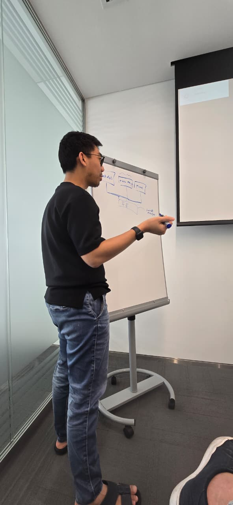
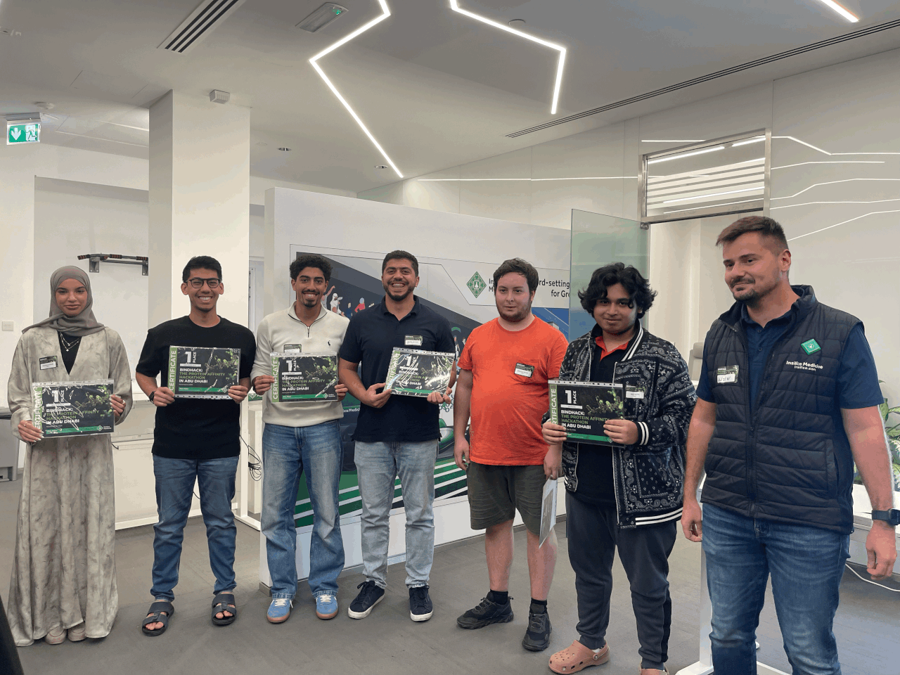
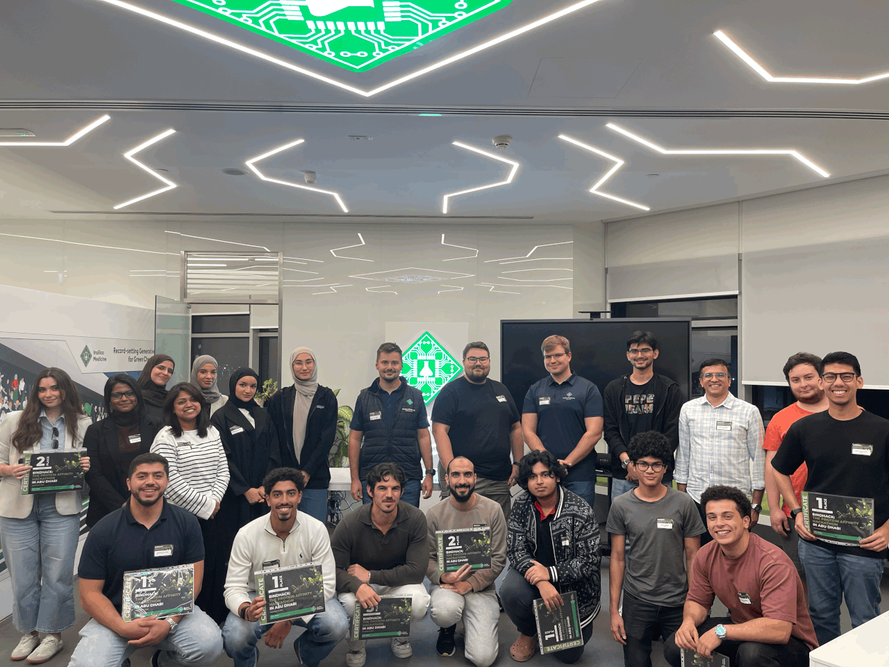

Last Saturday Insilico Medicine ran a hackathon called BindHack in Masdar City. The brief was one line: predict how strongly an antibody binds its antigen, from sequence data, in six hours.
It is a good competition problem because it is a real one. How tightly an antibody holds its antigen decides whether it is worth making, and finding that out on the bench is slow work. Anything that can rank candidates beforehand saves the bench work for the ones that deserve it.
I walked in planning to win it on my own. I have been building models like this for a while and six hours sounded like plenty. That lasted until the teams were formed and I found out that some of the people sitting next to me write code for a living.

Team 1 was Syafiq Kamarul Azman, Youssof Saleh, Noel Thomas, Shamma, Aleks and me. We spent the opening stretch talking rather than typing: what the target really was, and what we could actually finish before the clock ran out. Then we split into pairs, gave each pair one piece of the problem, and agreed up front to keep whatever scored best rather than whatever anyone was most attached to.
Almost all of the six hours went into the data and into how to represent it. Which training examples to trust. How to turn a sequence into features that a fast scorer can use. The model itself was the small decision. What we handed in was a scoring pipeline built on sequence features, fast enough to retrain every time we changed our minds about the inputs.
Splitting into pairs is what made the clock survivable. Each pair owned one piece and brought back whatever it had, instead of five people reading the same file and agreeing with each other.
Predicting binding affinity from sequence is not a solved problem, and an afternoon does not solve it. An afternoon is enough to find out how far careful data handling gets you, which was further than I expected. Ours came first across all teams.

Working alone I would have spent all six hours tuning one model. Five people and nobody defending their own idea beat any modeling trick I brought with me. I did not expect that going in.

Insilico ran it well, and I would do another one.